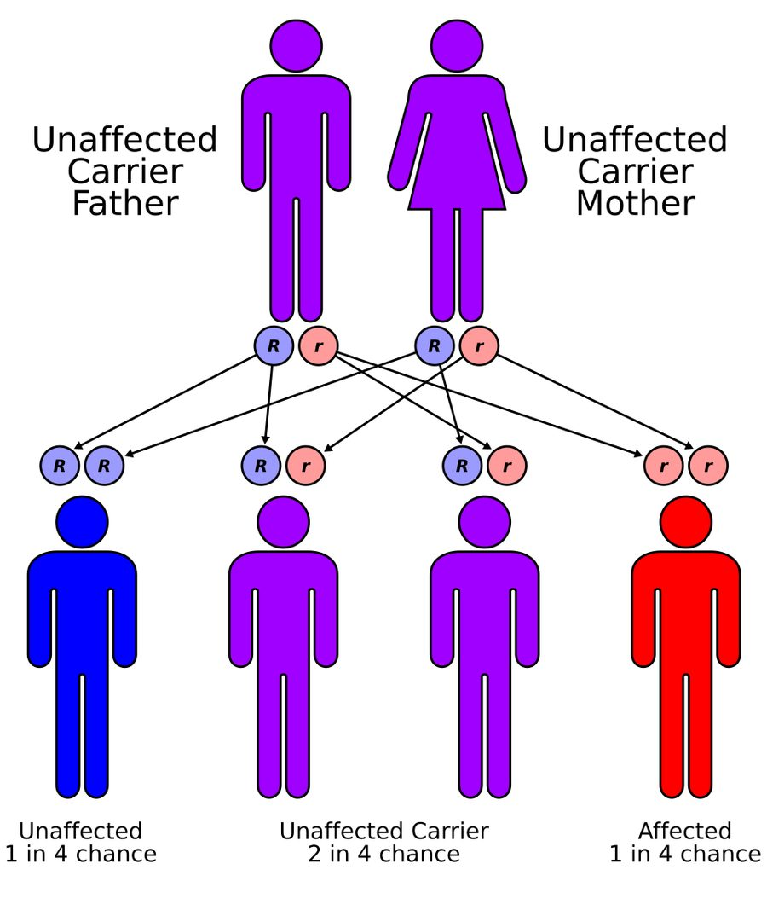

General information only. It does not replace advice from a health professional or genetic counselling.
At a glance
| Gene | CFTR, chromosome 7 |
| Inheritance | Autosomal recessive |
| Frequency in Spain | About 1 in 5,000 newborns |
| Carriers | 1 in 25-30 people of European descent |
| Detection | Newborn heel-prick screening |
| Treatment | Specialist units; CFTR modulators for most patients |


What it is
Cystic fibrosis is an inherited disease that makes the secretions of several organs thicker and stickier than normal. Thick mucus blocks the ducts it should flow through, causing inflammation and infection. It mainly affects:
- Lungs: mucus is not cleared properly, traps bacteria and causes repeated infections that damage the airways over the years.
- Pancreas: the ducts become blocked and digestive enzymes do not reach the gut. Without treatment, fat is poorly absorbed and the person does not gain weight.
- Liver, intestine and sinuses.
- Reproductive tract: most men are infertile because the vas deferens is missing, although they can have children with assisted reproduction.
- Sweat glands: sweat is very salty. Some mothers noticed it when kissing their baby.
The name comes from the lesions seen in the pancreas: scarring (fibrosis) and cysts.
Genetic cause
The disease is caused by variants in the CFTR gene on chromosome 7, identified in 1989 by the teams of Lap-Chee Tsui, John Riordan and Francis Collins. The gene holds the instructions for a protein that works as a chloride channel: a gate in the cell membrane that controls the passage of chloride and, with it, water. If the channel fails, there is too little water on the surface of the airways and ducts, and mucus thickens.
More than 2,000 variants of the gene are known, although not all cause disease. The most common in Europe is F508del: the loss of a single amino acid, phenylalanine at position 508. It makes the protein fold incorrectly so that the cell destroys it before it reaches the membrane. It accounts for about 70 % of altered copies in northern Europe and just over half in Spain.
Variants are grouped into classes according to how they fail: the protein is not made, does not reach the membrane, reaches it but does not open properly, lets little chloride through or is made in small amounts. This matters because current drugs act on specific mechanisms.
Inheritance
It is an autosomal recessive disease: two altered copies of the gene are needed, one from each parent. People with a single copy are carriers: they are healthy, and most do not know it.
If both members of a couple are carriers, each pregnancy has:
- a 25 % chance of a child with cystic fibrosis,
- a 50 % chance of a healthy carrier child,
- a 25 % chance of a child with no altered copy.
These probabilities apply to every pregnancy, whatever happened in previous ones. That is why the disease often appears unexpectedly in families with no known history.
Symptoms and course
Features and severity vary greatly, even between people with the same variants:
- Newborns: about 15 % are born with a bowel blockage called meconium ileus.
- Childhood: persistent cough, recurrent bronchitis and pneumonia, bulky greasy stools, poor weight gain despite eating well.
- Adolescence and adulthood: bronchiectasis (widened, damaged airways), chronic infection with bacteria such as Pseudomonas aeruginosa, nasal polyps, cystic fibrosis-related diabetes, liver disease, osteoporosis and infertility.
Some people with "mild" variants are diagnosed as adults, for example during investigation of male infertility or recurrent pancreatitis.
Diagnosis
- Newborn screening (heel-prick test): measures immunoreactive trypsinogen, a pancreatic enzyme that is raised in the baby's blood. If it is high, genetic testing or a second measurement follows. It has been applied throughout Spain since 2015 and allows treatment to begin before symptoms appear.
- Sweat test: the confirmatory test. Sweating is stimulated on the forearm with a mild, painless electric current, and chloride in the sweat is measured. A value of 60 mmol/L or more confirms the diagnosis; 30-59 is borderline.
- Genetic testing of CFTR: identifies both variants, which helps predict the course, choose treatment and offer carrier testing to the family.
Treatment
Treatment is given in multidisciplinary cystic fibrosis units, with respiratory physicians, gastroenterologists, physiotherapists, dietitians, nurses and psychologists. It rests on several pillars:
- Daily airway clearance physiotherapy and exercise, to help clear mucus.
- Inhaled drugs that thin the mucus (dornase alfa, hypertonic saline) and inhaled or oral antibiotics to control infection.
- Pancreatic enzymes with every meal, fat-soluble vitamin supplements (A, D, E and K) and a high-calorie diet.
- Management of diabetes, liver and bone health.
- Lung transplantation for advanced respiratory disease.
CFTR modulators
The big change of the past decade has been CFTR modulators, the first drugs that correct the protein defect rather than treating its consequences:
- Potentiators, such as ivacaftor, help open a channel already in the membrane.
- Correctors, such as elexacaftor and tezacaftor, help the protein fold and reach the membrane.
The combination of elexacaftor, tezacaftor and ivacaftor (approved in the European Union in 2020) works for people with at least one copy of F508del, about 85-90 % of patients. In clinical trials it improved lung function by roughly 10 to 14 percentage points, reduced flare-ups and nearly normalised sweat chloride. In real life, many people no longer need hospital admissions and some have come off transplant waiting lists. Its use has been extended to children from 2 years of age. In 2025 a new once-daily combination of vanzacaftor, tezacaftor and deutivacaftor was approved.
Life expectancy
In the 1960s most children with cystic fibrosis did not reach school age. Today, thanks to early diagnosis and treatment, median survival in countries with good registries exceeds 50 years, and people who start modulators in childhood are expected to live considerably longer. For the first time there are more adults than children with the disease in many European countries.
Current research
- About 10 % of patients have variants that do not respond to current modulators, for example variants that prevent the protein from being made. For them, inhaled messenger RNA therapies and gene therapy with viral vectors carrying a healthy copy of the gene to airway cells are being studied.
- Gene editing with CRISPR and base editing is being tested in the laboratory to correct specific variants.
Frequently asked questions
Can I find out whether I am a carrier? Yes. Carrier testing is offered to relatives of affected people and to couples who request it before or during pregnancy. Ask your doctor or a clinical genetics unit.
Is it contagious? No. But people with cystic fibrosis should avoid close contact with each other, because they can pass on bacteria that colonise their lungs.
Can they have children? Yes. Women are usually fertile, and many men can become fathers with assisted reproduction. Genetic counselling and testing of the partner are recommended.
Where to learn more
See also: Newborn and prenatal screening, Carrier testing and Targeted treatments.
Sources
- Grasemann H, Ratjen F. Cystic fibrosis. N Engl J Med. 2023;389(18):1693-1707. doi:10.1056/NEJMra2216474
- Shteinberg M, Haq IJ, Polineni D, Davies JC. Cystic fibrosis. Lancet. 2021;397(10290):2195-2211. doi:10.1016/S0140-6736(20)32542-3
- Heijerman HGM, McKone EF, Downey DG, et al. Efficacy and safety of the elexacaftor plus tezacaftor plus ivacaftor combination regimen in people with cystic fibrosis homozygous for the F508del mutation. Lancet. 2019;394(10212):1940-1948. doi:10.1016/S0140-6736(19)32597-8
- Middleton PG, Mall MA, Dřevínek P, et al. Elexacaftor-tezacaftor-ivacaftor for cystic fibrosis with a single Phe508del allele. N Engl J Med. 2019;381(19):1809-1819. doi:10.1056/NEJMoa1908639
- Farrell PM, White TB, Ren CL, et al. Diagnosis of cystic fibrosis: consensus guidelines from the Cystic Fibrosis Foundation. J Pediatr. 2017;181S:S4-S15. doi:10.1016/j.jpeds.2016.09.064
- European Medicines Agency. Kaftrio: EPAR.
- MedlinePlus Genetics. Cystic fibrosis.
- European Cystic Fibrosis Society. Patient Registry annual data report.